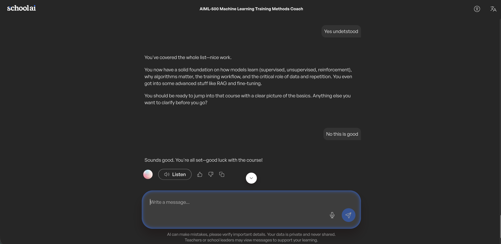

Machine-learning training methods — supervised, unsupervised, and reinforcement — worked out in live dialogue with an AI coach, then distilled into plain English.
This activity came with a twist: no lecture, no slides — just an AI coach, seven required questions, and a running conversation. The rule was simple: you don't get to nod along. You explain each concept back until it holds up. Underneath every one of those concepts sits the same engine:
This is an interactive learning session with SchoolAI's Machine Learning Training Methods Coach — a guided dialogue on how models actually learn. The format was the point: instead of reading about supervised learning, I had to explain it back, with an AI coach probing until each answer held up. What's here is the distilled result: seven core questions answered in plain English, plus the detour into RAG and fine-tuning that went beyond the assignment.
The dialogue covered the three learning paradigms plus the machinery underneath them: why algorithms matter, the steps of the training workflow, and the roles of data and repetition. Below, coach messages are paraphrased and my answers are distilled from the live session — the full recording is in the Evidence section.
How does a supervised learning model learn from the training data?
From labeled examples — every input arrives with the right answer attached. The model predicts, compares its guess to the label, measures the error, and adjusts its parameters to shrink it. Repeat that across thousands of examples and "guess, check, adjust" turns into real pattern recognition. It's studying with the answer key in hand.
What is the main approach used to train models in unsupervised learning?
No labels at all. The model gets raw data and has to find the structure itself — clustering similar points, surfacing patterns, flagging outliers. Nobody defines "customer segment" in advance; the model discovers that these examples belong together and those don't. It's sorting a box of unlabeled photos into piles that make sense.
In reinforcement learning, how does an agent learn the best actions to take?
By acting and living with the consequences. The agent tries an action, the environment hands back a reward or a penalty, and the agent updates its strategy to favor what paid off — while still exploring enough to find better moves it hasn't tried yet. Trial, error, feedback, repeat: learning a video game without reading the manual.
Why are algorithms important in the training of machine learning models?
The algorithm is the learning procedure itself — the recipe that turns error into improvement. Something like gradient descent decides which direction, and how far, to nudge every parameter after each mistake. Without it, data is just a pile of examples; the algorithm is what converts that pile into a better model, and the choice shapes what's learnable, how fast, and at what cost.
What are the basic steps involved in training a machine learning model?
Collect and prepare the data, choose a model and algorithm, then train — feed examples, measure error, adjust. Evaluate on data the model has never seen, tune, and go around again until it generalizes. Then deploy and keep monitoring. The loop matters more than any single step.
How does repetition — iterating over the data — help in training a model?
One pass gives you a rough sketch. Each additional pass lets the model correct a little more of its error, converging from noise toward pattern — the way a song settles in with practice. The catch: too many passes over the same data and it stops learning and starts memorizing. Iteration builds the skill; overdoing it builds overfitting.
What is the role of examples — data — in training a machine learning model?
Data is the model's entire experience of the world — the only thing it learns from. Quality, quantity, and representativeness set the ceiling: thin or biased examples produce a model that's confidently wrong. A brilliant algorithm can't out-train bad data.
One more before I go — where do RAG and fine-tuning fit into all of this?
Fine-tuning continues training on new examples, changing what the model itself knows. Retrieval-augmented generation leaves the model alone and hands it the right reference material at answer time — grounding instead of retraining.
Which clicked immediately — my first artifact, FitBot, is retrieval-grounding in practice: curated knowledge files, browsing disabled. I'd built the pattern before I had the vocabulary for it.
Built for the AIML-500 activity on machine-learning training methods, which replaced a traditional lesson with an AI-coached dialogue. My objective was twofold: lock in a working, plain-English command of how models learn — solid enough to explain without notes — and practice the meta-skill the course is really teaching: using an AI collaborator to pressure-test my own understanding instead of passively consuming content.
Most evidence of "I know the ML basics" is a quiz score. This is a conversation — pressure-tested in real time by an AI coach, recorded end to end, and then deliberately reworked for a reading audience rather than dumped as a transcript. The off-script detour into RAG versus fine-tuning is the part I'd point to: it's where the session stopped being an assignment and became curiosity.
Training-method fluency is the vocabulary of every AI product decision I'll make: does this problem have labels, does a reward signal even exist, is fine-tuning or retrieval the right adaptation strategy. That last one isn't theoretical for me — my first artifact, FitBot, is retrieval-grounding in practice, and this session gave that build its formal backbone. It also completes the set: Artifact 1 shows I can build, Artifact 2 shows I can choose, and this one shows I can explain.

The complete interaction log also lives in the SchoolAI Space, where it is directly visible to my instructor.
SchoolAI. (2026). AIML-500 Machine Learning Training Methods Coach [AI chatbot Space]. https://student.schoolai.com
A Beginner's Guide to Artificial Intelligence and Machine Learning. AIML-500 assigned reading, Indiana Wesleyan University. (2026).